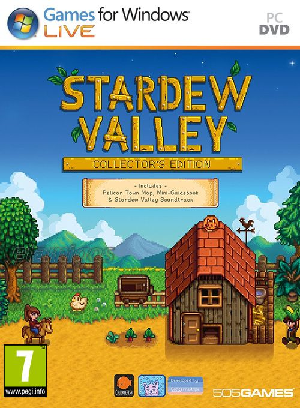

Stardew Valley v1.6.14 457 MB
Género: Simulación
Acabas de heredar la vieja parcela agrícola de tu abuelo de Stardew Valley.
Decides partir hacia una nueva vida con unas herramientas usadas y algunas
monedas. ¿Te ves capaz de vivir de la tierra y convertir estos campos
descuidados en un hogar próspero?